Modifying coalescent cutoffs
Michael Mansfield
13 December, 2021
Source:vignettes/CoalescingCutoffs.Rmd
CoalescingCutoffs.Rmd
knitr::opts_chunk$set(cache = TRUE, cache.lazy = FALSE)
knitr::opts_knit$set(verbose = TRUE)Introduction
In this vignette, we examine the behaviour of the coalescing algorithm under varying thresholds of minimum alignment width. In doing so we attempt to fully describe the contiguiuty of the pairwise alignments.
The brunt of this vignette is the product of Charles’ hard work.
The core functions used here are maintained in our GenomicBreaks R package, which is fully documented at: https://oist.github.io/GenomicBreaks.
Load R packages and data
##
## Attaching package: 'dplyr'## The following objects are masked from 'package:Biostrings':
##
## collapse, intersect, setdiff, setequal, union## The following object is masked from 'package:XVector':
##
## slice## The following objects are masked from 'package:GenomicRanges':
##
## intersect, setdiff, union## The following object is masked from 'package:GenomeInfoDb':
##
## intersect## The following objects are masked from 'package:IRanges':
##
## collapse, desc, intersect, setdiff, slice, union## The following objects are masked from 'package:S4Vectors':
##
## first, intersect, rename, setdiff, setequal, union## The following objects are masked from 'package:BiocGenerics':
##
## combine, intersect, setdiff, union## The following objects are masked from 'package:stats':
##
## filter, lag## The following objects are masked from 'package:base':
##
## intersect, setdiff, setequal, union##
## Attaching package: 'purrr'## The following object is masked from 'package:XVector':
##
## compact## The following object is masked from 'package:GenomicRanges':
##
## reduce## The following object is masked from 'package:IRanges':
##
## reduce
library('viridis') |> suppressPackageStartupMessages()
(genomes <- OikScrambling:::loadAllGenomes())## List of length 6
## names(6): Oki Osa Bar Kum Aom Nor
(load("BreakPoints.Rdata"))## [1] "gbs" "unal" "coa" "unmap" "unalMap" "tra"
## [7] "tra2" "coa2" "unmap2" "longShort"Generating coalesced alignments
The function coalesce_contigs() is the primary driver of our synteny analysis. It accepts an argument, minwidth, which controls the minimum width of segments to be considered for synteny analyses.
In the next session, I calculate these alignments at a large number of minimum width cutoffs.
# use coalesce_contigs at different cutoffs
minwidthCutoffs = c(0, 25, 50, 100, 250, 500, 750, 1000, 1250, 1500, 2000, 2500, 5000, 7500, 10000, 12500, 25000, 50000, 100000)
cutoff_coas = lapply(minwidthCutoffs, function(MinWidth) BiocParallel::bplapply(gbs, function(gb) coalesce_contigs(gb=gb, minwidth=MinWidth)) |> SimpleList()) |> SimpleList()
names(cutoff_coas) <- sapply(minwidthCutoffs, function(s) paste('coa_minWidth_', as.character(s), sep=''))
# Append uncoalesced alignment
cutoff_coas$uncoalesced <- gbs
# Reorder to put uncoalesced first
cutoff_coas <- cutoff_coas[c(20,1:19)]Let’s make some tables to help understand what’s going on, in terms of how much is being removed, how big the syntenic regions are, and so on.
# You can then make a simple table that tabulates the number of segments at a number of cutoffs.
cutoff_coas_tables = SimpleList()
# Count number of segments. We make 0-count cells to NA to make them more obvious in the heatmap later.
cutoff_coas_tables$NumSegments <-
purrr::map_dfr(cutoff_coas |> as("list"), \(cutoff)
purrr::map(cutoff |> as("list"), length)
) |> dplyr::mutate_all(na_if, 0)
# Show how many total bases are left after coalescing.
# Divide by 1,000,000 to convert it to Mbp. 0-counts are converted to NA.
cutoff_coas_tables$TotalAligned <-
purrr::map_dfr(cutoff_coas |> as("list"), \(cutoff)
purrr::map(cutoff |> as("list"), \(gr) sum(width(gr)/1000000))
) |> dplyr::mutate_all(na_if, 0)
# Show largest segment. Combine it with the query name to see which chromosome segment is biggest.
cutoff_coas_tables$LargestSegment <-
purrr::map_dfr(cutoff_coas |> as("list"), \(cutoff)
purrr::map(cutoff |> as("list"), \(gr) max(width(gr)))
) |> dplyr::mutate_all(na_if, -Inf) |> suppressWarnings()
# Get name of largest segment, which can change based on the cutoffs.
cutoff_coas_tables$LargestSegmentName <-
purrr::map_dfr(cutoff_coas |> as("list"), \(cutoff)
purrr::map(cutoff |> as("list"), \(gb) {
if (length(gb) == 0) return(NA)
as.character(seqnames(gb)[which.max(width(gb))])
})
)
# Write a little function to relate a pair of species (A_B) to their genome size.
# named list of genome sizes (name=species, content=genome size).
genome_sizes=list(Aom=sum(seqlengths(genomes$Aom)), Bar=sum(seqlengths(genomes$Bar)),
Oki=sum(seqlengths(genomes$Oki)), Osa=sum(seqlengths(genomes$Osa)),
Kum=sum(seqlengths(genomes$Kum)), Nor=sum(seqlengths(genomes$Nor)),
Ply=128639392, Ros=134327879, Sav=177003750, Rob=117529544,
Dme=137547960, Dbu=110837441, Dsu=130045071, Dya=136883712
)
match_pair_with_sizes = function(pair, genome_sizes) {
spp = unlist(strsplit(pair, "_"))
g1 = spp[1]
g2 = spp[2]
gs1 = genome_sizes[[g1]]
gs2 = genome_sizes[[g2]]
result = list()
result[[g1]] = gs1
result[[g2]] = gs2
return(result)
}
# Use the genome sizes to calculate how much of the genomes are covered.
# This coverage value is just the total alignment length divided by the mean of the two genome sizes.
cutoff_coas_tables$PercentGenomeCovered <- as.data.frame(do.call(rbind, lapply(cutoff_coas, function(cutoff) {
cut_gb <- sapply(names(cutoff), function(pair) {
gb <- cutoff[[pair]]
pair_sizes <- match_pair_with_sizes(pair, genome_sizes=genome_sizes)
mean_genome_size <- mean(unlist(pair_sizes))
covered <- (sum(width(gb))/mean_genome_size)*100
covered
})
cut_gb
})))
# Show how many bases of the original alignment are covered.
uncoalescedAliTot <- cutoff_coas_tables$TotalAligned[1,]
cutoff_coas_tables$PercentOriginalAlignment <- do.call(rbind, apply(cutoff_coas_tables$TotalAligned, 1, function(x) x/uncoalescedAliTot)) *100Note the names of the largest segments.
(cutoff_coas_tables$LargestSegmentName)## # A tibble: 20 × 27
## Oki_Osa Oki_Bar Oki_Kum Oki_Aom Oki_Nor Osa_Oki Osa_Bar Osa_Kum Osa_Aom
## <chr> <chr> <chr> <chr> <chr> <chr> <chr> <chr> <chr>
## 1 PAR PAR XSR PAR PAR PAR PAR PAR XSR
## 2 PAR chr2 XSR XSR XSR XSR Chr2 XSR XSR
## 3 PAR chr2 XSR XSR XSR XSR Chr2 XSR XSR
## 4 PAR chr2 XSR XSR XSR XSR Chr2 XSR XSR
## 5 PAR chr2 XSR XSR XSR XSR Chr2 XSR XSR
## 6 PAR chr2 XSR XSR XSR XSR XSR XSR XSR
## 7 chr2 chr2 XSR chr2 XSR XSR Chr2 XSR XSR
## 8 chr2 chr2 XSR chr2 XSR XSR XSR XSR XSR
## 9 chr2 XSR XSR XSR XSR XSR XSR XSR XSR
## 10 chr2 chr2 XSR XSR XSR XSR XSR XSR XSR
## 11 XSR chr2 XSR XSR XSR XSR XSR XSR XSR
## 12 XSR XSR XSR XSR XSR XSR XSR XSR XSR
## 13 XSR XSR XSR YSR XSR XSR XSR XSR XSR
## 14 PAR chr2 XSR PAR XSR PAR XSR PAR XSR
## 15 XSR chr1 XSR XSR XSR XSR XSR XSR XSR
## 16 XSR chr1 XSR XSR PAR XSR XSR XSR XSR
## 17 chr2 chr1 XSR chr2 chr2 Chr2 XSR XSR XSR
## 18 PAR PAR XSR PAR PAR PAR XSR PAR XSR
## 19 NA NA XSR NA NA NA NA NA XSR
## 20 NA NA NA NA NA NA NA NA XSR
## # … with 18 more variables: Osa_Nor <chr>, Bar_Oki <chr>, Bar_Osa <chr>,
## # Bar_Kum <chr>, Bar_Aom <chr>, Bar_Nor <chr>, Ply_Ros <chr>, Ply_Rob <chr>,
## # Ply_Sav <chr>, Ply_Oki <chr>, Rob_Ros <chr>, Rob_Ply <chr>, Rob_Sav <chr>,
## # Rob_Oki <chr>, Dme_Dbu <chr>, Dme_Dsu <chr>, Dme_Dya <chr>, Dme_Dma <chr>Plotting features at different cutoffs
Number of segments
# Number of segments
pheatmap(cutoff_coas_tables$NumSegments, col=magma(100), cluster_cols=F, cluster_row=F, gaps_col=c(15,23), angle_col = 90, main='Number of alignments (uncoalesced) or syntenic regions (coalesced)', display_numbers=T, number_color='#d9d9d9', number_format="%.0f", fontsize_number=6)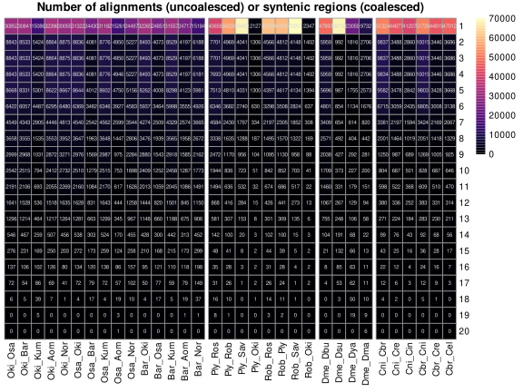 ##### Total aligned
pheatmap(cutoff_coas_tables$TotalAligned, col=magma(100), cluster_cols=F, gaps_col=c(15,23), cluster_row=F, angle_col = 90, main='Sum of all alignment widths (Mbp)', display_numbers=T, number_color='#d9d9d9', number_format="%.0f", fontsize_number=6)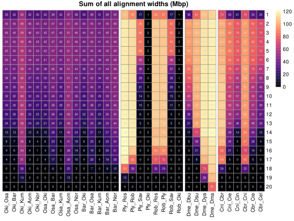
Largest segment
pheatmap(cutoff_coas_tables$LargestSegment, col=magma(100), cluster_cols=F, gaps_col=c(15,23), cluster_row=F, angle_col = 90, main='Size of largest segment (Mbp)', display_numbers=T, number_color='#d9d9d9', number_format="%.0f", fontsize_number=6)
Percent of genome covered by alignments
Note the denominator here is the mean of the query and target genome sizes.
pheatmap(cutoff_coas_tables$PercentGenomeCovered, col=magma(100), cluster_cols=F, gaps_col=c(15,23), cluster_row=F, angle_col = 90, main='Percentage of query/target genomes covered (%)', display_numbers=T, number_color='#d9d9d9', number_format="%.0f", fontsize_number=6)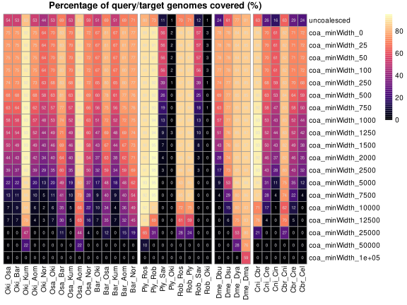
Percent of total aligned positions represented in alignments
Note the denominator here is the mean of the query and target genome sizes.
pheatmap(cutoff_coas_tables$PercentOriginalAlignment, col=magma(100), cluster_cols=F, gaps_col=c(15,23), cluster_row=F, angle_col = 90, main='Percentage of originally-aligned positions covered (%)', display_numbers=T, number_color='#d9d9d9', number_format="%.0f", fontsize_number=6)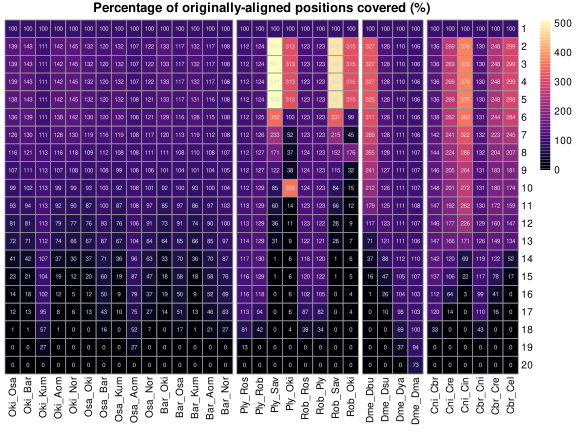
The effect of coalescing cutoffs on synteny
Now let’s make some chromosome plots. Here are the original Okinawa-Osaka alignments, with no coalescing.
plotApairOfChrs(cutoff_coas$uncoalesced$Oki_Osa, 'chr1')
You can see many details here, including the huge number of small alignments. Many of these are removed by coalescing:
plotApairOfChrs(cutoff_coas$coa_minWidth_0$Oki_Osa, 'chr1')
However, many small alignments persist after coalescing. As seen above, applying length filters to remove small alignments can drastically reduce the number of segments - or in other words, greatly increase the contiguity of the coalesced alignments.
Here is the result of removing alignments below 250bp - a fairly conservative threshold:
plotApairOfChrs(cutoff_coas$coa_minWidth_250$Oki_Osa, 'chr1')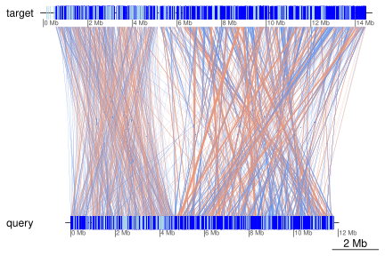
And if we go too far, we lose too much information for it to be useful:
plotApairOfChrs(cutoff_coas$coa_minWidth_10000$Oki_Osa, 'chr1')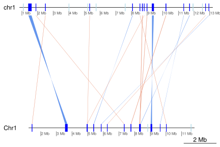
Using “maximal coverage of query/target genomes” as the selector
For the following plots, I use my own arbitrary choices to select a cutoff for each pair that balances retaining as much information as possible with the largest possible synteny. I select the cutoff that maximizes the total coverage of the pair - the maximum “Sum of all alignment widths” cell from the heatmap above.
Okinawa-Osaka
plotApairOfChrs(cutoff_coas$coa_minWidth_250$Oki_Osa, 'chr1')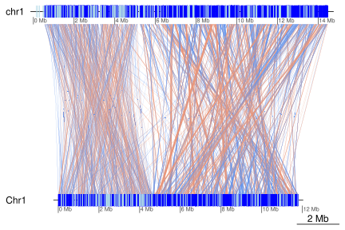
plotApairOfChrs(cutoff_coas$coa_minWidth_250$Oki_Osa, 'chr2')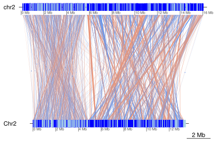
plotApairOfChrs(cutoff_coas$coa_minWidth_250$Oki_Osa, 'PAR')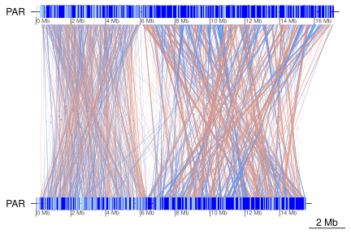
Okinawa-Barcelona
plotApairOfChrs(cutoff_coas$coa_minWidth_100$Oki_Bar, 'chr1')
plotApairOfChrs(cutoff_coas$coa_minWidth_100$Oki_Bar, 'chr2')
plotApairOfChrs(cutoff_coas$coa_minWidth_100$Oki_Bar, 'PAR')
Osaka-Barcelona
plotApairOfChrs(cutoff_coas$coa_minWidth_250$Osa_Bar, 'Chr1')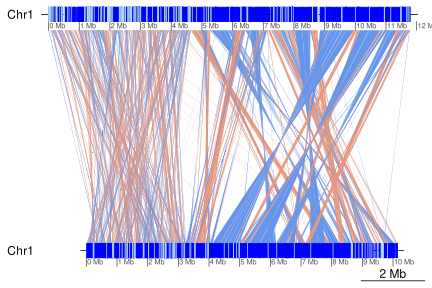
plotApairOfChrs(cutoff_coas$coa_minWidth_250$Osa_Bar, 'Chr2')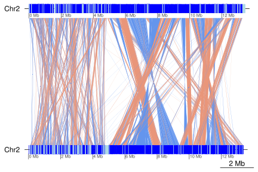
plotApairOfChrs(cutoff_coas$coa_minWidth_250$Osa_Bar, 'PAR')
Okinawa-Kume
The following is taken from the vignette("ParallelPlots", package = "OikScrambling") vignette. It is invoked here to allow later plots between Okinawa and Kume.
requireNamespace("ade4")
treeLeaf <- function(name, length=NULL) {
if(!is.null(length)) length <- paste0(':', length)
paste0(name, length)
}
treeNode <- function(branch1, branch2, length = NULL) {
if(!is.null(length)) length <- paste0(':', length)
paste0('(', branch1, ',', branch2, ')', length)
}
addRoot <- function(branch) paste0(branch, ";")
tree <-
addRoot(
treeNode(
treeNode( length = 2,
treeLeaf("Okinawa", 1),
treeLeaf("Kume", 1)
),
treeNode( length = 1,
treeNode( length = 1,
treeLeaf("Osaka", 1),
treeLeaf("Aomori", 1)
),
treeNode( length =1,
treeLeaf("Norway", 1),
treeLeaf("Barcelona", 1)
)
)
)
)The optimal Okinawa-Kume plot:
# Note that this uses the cutoff coalesced object and not the translocation-removed coa2 object.
x <- cutoff_coas$coa_minWidth_2000$Oki_Kum
x[seqnames(x$query) == "contig_90_1"] <- reverse(query = TRUE, x[seqnames(x$query) == "contig_90_1"])
x[seqnames(x$query) == "contig_88_1"] <- reverse(query = TRUE, x[seqnames(x$query) == "contig_88_1"])
x$query <- mergeSeqLevels(x$query, c("contig_27_1", "contig_90_1", "contig_3_1", "contig_88_1"), "new_scaffold")
plotApairOfChrs(x, 'chr1', dna_seg_scale = TRUE)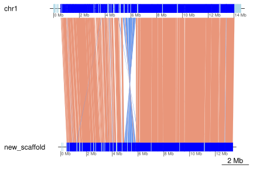
Note that when you try to increase this further, you begin losing many regions:
x <- cutoff_coas$coa_minWidth_10000$Oki_Kum
x[seqnames(x$query) == "contig_90_1"] <- reverse(query = TRUE, x[seqnames(x$query) == "contig_90_1"])
x[seqnames(x$query) == "contig_88_1"] <- reverse(query = TRUE, x[seqnames(x$query) == "contig_88_1"])
x$query <- mergeSeqLevels(x$query, c("contig_27_1", "contig_90_1", "contig_3_1", "contig_88_1"), "new_scaffold")
plotApairOfChrs(x, 'chr1', dna_seg_scale = TRUE)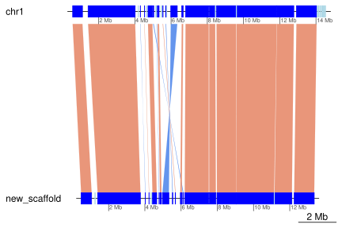
Session information
## R version 4.1.2 (2021-11-01)
## Platform: x86_64-pc-linux-gnu (64-bit)
## Running under: Debian GNU/Linux bookworm/sid
##
## Matrix products: default
## BLAS: /usr/lib/x86_64-linux-gnu/blas/libblas.so.3.10.0
## LAPACK: /usr/lib/x86_64-linux-gnu/lapack/liblapack.so.3.10.0
##
## locale:
## [1] LC_CTYPE=en_GB.UTF-8 LC_NUMERIC=C
## [3] LC_TIME=en_GB.UTF-8 LC_COLLATE=en_GB.UTF-8
## [5] LC_MONETARY=en_GB.UTF-8 LC_MESSAGES=en_GB.UTF-8
## [7] LC_PAPER=en_GB.UTF-8 LC_NAME=C
## [9] LC_ADDRESS=C LC_TELEPHONE=C
## [11] LC_MEASUREMENT=en_GB.UTF-8 LC_IDENTIFICATION=C
##
## attached base packages:
## [1] stats4 stats graphics grDevices utils datasets methods
## [8] base
##
## other attached packages:
## [1] BSgenome.Odioica.local.Odioica.reference.v3.0_1.0.1
## [2] BSgenome.Odioica.local.AOM.5_1.0.0
## [3] BSgenome.Odioica.local.KUM.M3_1.0.0
## [4] BSgenome.Odioica.local.Bar2.p4_1.0.0
## [5] BSgenome.Odioica.local.OSKA2016v1.9_1.0.0
## [6] BSgenome.Odioica.local.OKI2018.I69_1.0.0
## [7] viridis_0.6.2
## [8] viridisLite_0.4.0
## [9] purrr_0.3.4
## [10] pheatmap_1.0.12
## [11] dplyr_1.0.7
## [12] OikScrambling_0.6.2
## [13] ggplot2_3.3.5
## [14] GenomicBreaks_0.12.0
## [15] BSgenome_1.62.0
## [16] rtracklayer_1.54.0
## [17] Biostrings_2.62.0
## [18] XVector_0.34.0
## [19] GenomicRanges_1.46.1
## [20] GenomeInfoDb_1.30.0
## [21] IRanges_2.28.0
## [22] S4Vectors_0.32.3
## [23] BiocGenerics_0.40.0
##
## loaded via a namespace (and not attached):
## [1] backports_1.4.0 Hmisc_4.6-0
## [3] systemfonts_1.0.3 plyr_1.8.6
## [5] splines_4.1.2 BiocParallel_1.28.3
## [7] digest_0.6.29 htmltools_0.5.2
## [9] tiff_0.1-10 GO.db_3.14.0
## [11] gdata_2.18.0 fansi_0.5.0
## [13] magrittr_2.0.1 checkmate_2.0.0
## [15] memoise_2.0.1 cluster_2.1.2
## [17] tzdb_0.2.0 readr_2.1.1
## [19] annotate_1.72.0 matrixStats_0.61.0
## [21] R.utils_2.11.0 pkgdown_2.0.1
## [23] jpeg_0.1-9 colorspace_2.0-2
## [25] blob_1.2.2 textshaping_0.3.6
## [27] xfun_0.28 crayon_1.4.2
## [29] RCurl_1.98-1.5 jsonlite_1.7.2
## [31] lme4_1.1-27.1 survival_3.2-13
## [33] glue_1.5.1 gtable_0.3.0
## [35] zlibbioc_1.40.0 DelayedArray_0.20.0
## [37] weights_1.0.4 abind_1.4-5
## [39] scales_1.1.1 DBI_1.1.1
## [41] Rcpp_1.0.7 plotrix_3.8-2
## [43] genoPlotR_0.8.11 xtable_1.8-4
## [45] htmlTable_2.3.0 foreign_0.8-81
## [47] bit_4.0.4 Formula_1.2-4
## [49] htmlwidgets_1.5.4 httr_1.4.2
## [51] RColorBrewer_1.1-2 ellipsis_0.3.2
## [53] mice_3.14.0 pkgconfig_2.0.3
## [55] XML_3.99-0.8 R.methodsS3_1.8.1
## [57] nnet_7.3-16 sass_0.4.0
## [59] locfit_1.5-9.4 utf8_1.2.2
## [61] tidyselect_1.1.1 rlang_0.4.12
## [63] reshape2_1.4.4 AnnotationDbi_1.56.2
## [65] munsell_0.5.0 tools_4.1.2
## [67] cachem_1.0.6 cli_3.1.0
## [69] generics_0.1.1 RSQLite_2.2.9
## [71] ade4_1.7-18 broom_0.7.10
## [73] evaluate_0.14 stringr_1.4.0
## [75] fastmap_1.1.0 fftwtools_0.9-11
## [77] yaml_2.2.1 ragg_1.2.1
## [79] knitr_1.36 bit64_4.0.5
## [81] fs_1.5.0 heatmaps_1.18.0
## [83] KEGGREST_1.34.0 nlme_3.1-153
## [85] R.oo_1.24.0 poweRlaw_0.70.6
## [87] pracma_2.3.6 compiler_4.1.2
## [89] rstudioapi_0.13 png_0.1-7
## [91] tibble_3.1.6 bslib_0.3.1
## [93] stringi_1.7.6 highr_0.9
## [95] desc_1.4.0 lattice_0.20-45
## [97] CNEr_1.30.0 Matrix_1.3-4
## [99] nloptr_1.2.2.3 vctrs_0.3.8
## [101] pillar_1.6.4 lifecycle_1.0.1
## [103] jquerylib_0.1.4 data.table_1.14.2
## [105] bitops_1.0-7 R6_2.5.1
## [107] BiocIO_1.4.0 latticeExtra_0.6-29
## [109] KernSmooth_2.23-20 gridExtra_2.3
## [111] codetools_0.2-18 boot_1.3-28
## [113] MASS_7.3-54 gtools_3.9.2
## [115] assertthat_0.2.1 SummarizedExperiment_1.24.0
## [117] rprojroot_2.0.2 rjson_0.2.20
## [119] withr_2.4.3 GenomicAlignments_1.30.0
## [121] Rsamtools_2.10.0 GenomeInfoDbData_1.2.7
## [123] parallel_4.1.2 hms_1.1.1
## [125] EBImage_4.36.0 grid_4.1.2
## [127] rpart_4.1-15 minqa_1.2.4
## [129] tidyr_1.1.4 rmarkdown_2.11
## [131] MatrixGenerics_1.6.0 Biobase_2.54.0
## [133] base64enc_0.1-3 restfulr_0.0.13